소풍 옆 차도
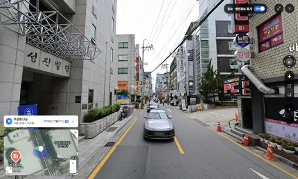
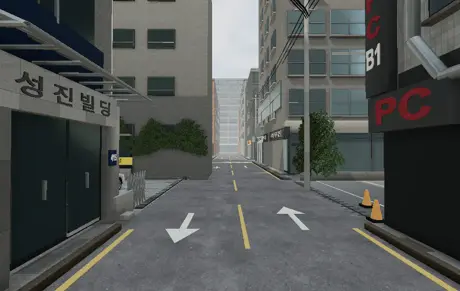
네이버 거리뷰 64컷으로 성진빌딩 주변을 조사하고, 같은 장소를 3D에서 33개 구도로 다시 촬영했습니다.
네이버 거리뷰에서 골목을 따라 이동하며 구도를 모으고, 같은 장소를 3D로 걸으며 비교하는 과정을 약 50초로 재연했습니다.
각 장소마다 2026년 7월 네이버 거리뷰와 같은 방향에서 촬영한 3D 화면을 나란히 놓았습니다. 사진을 누르면 크게 볼 수 있습니다.


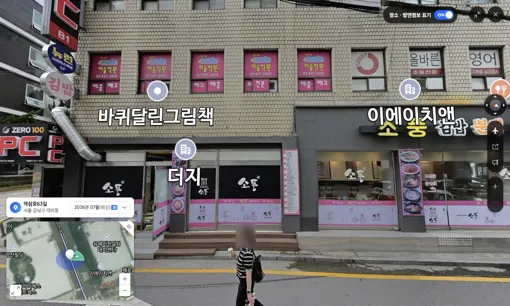
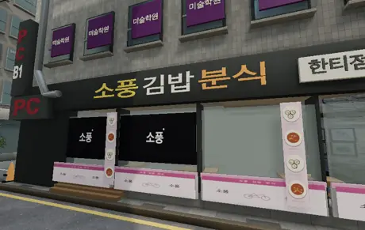

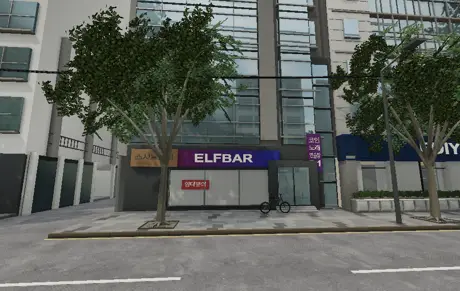


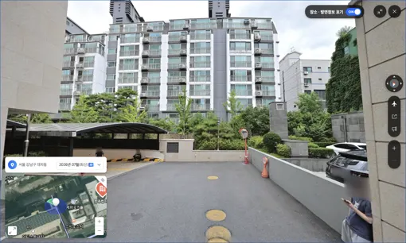


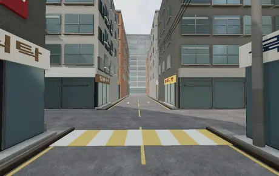
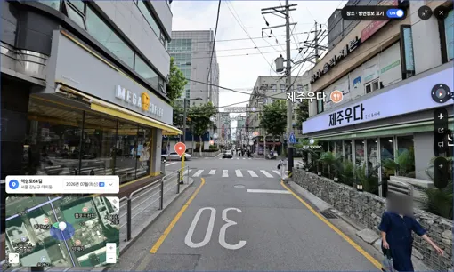
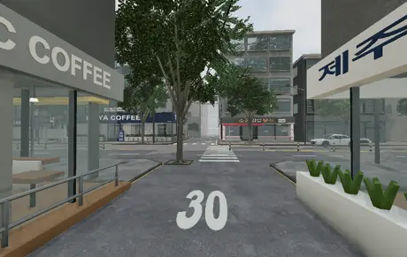
첫 메시지부터 마지막 메시지까지 · 6시간 20분 8초
인터넷에 보면, 실제 풍경을 블렌더랑 쓰리제이에스로만들어서 물도 찰랑거리고 진짜 말그대로 고퀄리티의 사이트를 만들던데 그거 어떻게가능한거야? 블렌더가 뭐길래 그게되는거야? 쓰리제이에스로만 만들면 완전 저퀄이잖아
Blender에서 지형과 재질을 만드는 일, Three.js에서 물결과 반사를 실시간으로 그리는 일을 나눠 설명했습니다.
역삼로 415 성진빌딩 주변을 에고브라우저로 네이버지도라던가 자료들을 쭉 보고 아주 자세하게 수집하고 뜯어봐서 블렌더랑 쓰리제이에스를 이용해서, 그 주변을 걸어다닐수있는 시뮬레이터 웹을 만들수있을까? 클라우드플레어에 호스팅하고. 가능한지, 뭐가 필요한지, 체크해주고 나에게 물어야하는게있으면 물어봐줘
성진빌딩 반경 40m를 첫 보행 구역으로 제안했습니다. 거리뷰 촬영 위치를 옮겨 외관을 대조하고 Cloudflare Pages에 올리는 계획을 세웠습니다.
Please implement the plan.
바로 다음 메시지에서 현실감에 대한 요청이 추가돼, 두 요청의 구현 결과를 함께 보고했습니다.
ㅇㅇ 그리고 필요한건 너가 판단해서 블렌더로 깔끔하게 만들어줘. 마치 현실같아야해. 내 말 이해돼?
Blender로 거리 장면을 만들고 Three.js에서 걸을 수 있는 첫 로컬 시안을 열었습니다. 실제로 관찰한 면과 추정한 면도 기록했습니다.
블렌더를 쓰고있는게 맞아? 블렌더가 그렇게 좋다니까 블렌더를 적극 활용해봐 난 잘몰라 블렌더가 왜좋은지. 이번에 해보면서 느끼고싶단말이야
카페 창틀, 테이블, 컵, 조명과 입체 간판을 Blender에서 모델링해 가까이서 보이는 깊이를 보강했습니다.
진짜 진짜 현실같아보여야하는데 지금 뭔가 현실감이 안드는 이유는 뭐야? 설명부터 해줘. 그리고지금 캐릭터가 걷는걸 3인칭으로 보는 뷰여야하는데. 그리고 훨씬 빨라야하고. 점프도되고. 이해돼?
반복되는 의자와 가로수, 주변 풍경과 어긋나는 반사가 모형처럼 보이는 이유라고 설명했습니다. 카메라를 3인칭으로 바꾸고 이동 속도를 높여 질주와 점프를 추가했습니다.
아니그리고 진짜 열받는게, 니맘대로 재구성하지말고 이디아커피의 구조와 옆에 가게들, 간판들까지 직접 필요한 거리뷰를 에고브라우저로 접속해서 모두 스샷찍어서. (최소 위치랑 구도별로 30장은 필요하지않겠어?) 하고 그대로 만들으라고. 이해안돼? 지금 전혀 그대로 안하고 그냥 너맘대로 대충 다 만들었지? 지금 내가 왜 불만인건지, 내 기대를 만족할려면 어떻게해야하는지 설명해봐 먼저
직접 확인한 거리뷰가 한 지점뿐이었다고 밝혔습니다. 임의로 정한 창 배열과 카페 내부를 짚고, 여러 위치에서 찍은 사진을 먼저 대조하기로 했습니다.
ㅇㅇ 제대로 하라고 제대로 제대로 제대로 ㄱㄱ 먼저 조사부터해봐
거리뷰 원본 33장을 모아 한눈에 볼 수 있게 배열했습니다. 이디야의 정면과 측면, 인접 점포 간판을 구도별로 살폈습니다.
싹 다 만들어. 최적화는 잘해야겠지만 진짜 현실처럼 느껴지는 블렌더 기법을 이용해서
33컷을 참고해 이디야의 파란 문과 코너 간판, 소풍김밥의 두 면 간판과 차양을 다시 만들었습니다. 창틀과 화단이 맞닿는 그늘은 Blender에서 미리 계산했습니다.
근데 궁금한게, 블렌더를 쓴게맞아? 어떤방식으로 쓴거야? 헤드리스로 쓴거니? 앱을 안쓰던데? 그리고 전체적으로 블럭같고 미완같은데? 그리고 좀더 더 위에서, 더 보게하고, 막혀있는 중앙분리대는 점프 안하면 못넘어야지. 이밖에도 내가 마음에 안들만한거 뭐인지 찾아봐바 그리고 보고해줘 뭐가 부족한지.
Blender를 창 없이 실행해 Python으로 모델을 만들고 GLB로 내보낸 과정을 설명했습니다. 추적 거리를 7.2m로 늘리고 중앙분리대가 보행을 막고 점프는 허용하는지 확인했습니다.
그리고 마우스 시점은 기본으로 키게하고, 어떤 키를 누르면 취소하게 하는식으로 잘하고, 그리고 마우스로 시점을 옮기면 캐릭터가 몸을 돌리게. 이해돼?그리고 캐릭터도 좀 귀여운 맛이있게. 아니 뭐 유리반사 이런게 중요한게 아니라 그냥 지금 너무 현실감이없잖아
마우스를 움직이면 시점과 캐릭터 몸이 함께 돌아가고 Esc로 해제되도록 바꿨습니다. 캐릭터 외형도 손봤습니다.
그니까 아직 실사보다 3d시안에 가까운데 니가 끝까지 알아서 개선해야지 왜멈췄어? 나 도무지 이해가안돼
거리뷰 정면과 코너를 다시 대조했습니다. 이디야 창 뒤를 막던 면을 걷어내고 둥근 기둥, 학원 창띠와 소풍김밥의 측면 창을 고쳐 웹에서 다시 캡처했습니다.
그리고 지금 소풍 한티점 저기로 들어가는 쪽이 인도가 아니라 차도야 이런 기초적인것도 모르는거보니까 애초에 사실 기반 코딩을 안한거같은데 내말이맞아?
거리뷰의 오토바이와 황색선을 보고 차도임을 확인했습니다. 긴 보도 모델이 골목 입구까지 덮고 있던 오류를 찾아냈습니다.
그리고 그 건물뒤에 모습이랑 주차장도 똑같이 구현해달라고. 자동차도 몇개있는거 아반떼 디자인이랑 똑같이
골목 입구를 아스팔트 차도로 고쳤습니다. 후면 거리뷰를 추가 확보해 주차선과 식재를 배치하고, SUV 한 대와 아반떼의 비례·램프를 참고한 세단 두 대를 만들었습니다.
그리고 와우포인트를 위해 처음 접속하면 항공뷰부터 보고 내려가게 할까? 어때
역삼로를 비스듬히 내려다보다가 골목을 지나 보행 시점으로 내려오는 3.6초 항공 진입 장면을 적용했습니다.
그리고 지금 시점 조작이 좀 이상한데 뭔말인지 알아? 자연스럽게 좋게 돼?
벽 때문에 카메라가 당겨질 때 시선 각도까지 바뀌던 원인을 찾아 추적 카메라를 수정했습니다.
맨처음에 항공뷰고 버튼누르면 진입하는걸로 하고 로딩도 깔끔하게 이쁘게 나타내자 그냥 화면 안뜨는거처럼하지말고 그리고 성진빌딩앞을 걷다 이런거 싹 빼고
항공 이미지와 로딩 진행 막대를 먼저 띄웠습니다. 준비가 끝나면 항공뷰에서 기다리다가 ‘거리로 들어가기’를 눌러 내려가도록 바꿨습니다.
그리고 차 모델링이이상한데 짜잘한 모델링이나 현실감 더하려면 어떻게개선해야하띾
Blender에서 휠하우스를 파고 차 지붕 곡선을 다듬었습니다. 앞유리 안쪽에 대시보드와 헤드레스트를 넣고 램프와 그릴을 분리했습니다.
딱 들어갔을 때 화면에서 커서가 안보이고, 들어갔을 때 주차장부터 보이는데 왜이래?
주차장으로 열린 원인은 차량 검수용 링크였습니다. 기본 입장은 이디야 앞으로 맞추고, 항공뷰에서는 커서가 보이게 고쳤습니다.
그리고 캐릭터 그냥 셔츠에 니트입은 남자 아니면 여자로 해줘 바꿀수있께. 이해돼?
흰 셔츠 위에 니트를 입은 남녀 캐릭터를 만들고, 항공뷰와 보행 화면에서 바꿀 수 있게 했습니다.
좋은데 팔이라던가 뛰는 모션 더 자연스럽게 못해? 맨처음에는 더 자연스러웠는데? 그리고 장소전환하면 순간이동하지말고 카메라가 스으윽 이동하고
팔과 달리기 동작을 다듬고 장소를 바꿀 때 카메라가 목적지까지 이어서 이동하게 했습니다. 실제 전환 장면을 영상으로 확인했습니다.
좋긴한데 뛸때 너무 우습게 몸을 좌우로 흔드는거아냐?
조깅과 질주 때 상체가 옆으로 기우는 최대 각도를 약 12도에서 3도로 줄이고 어깨의 비틀림도 줄였습니다.
기본캐릭터는 남자로돼있니
첫 방문의 기본값은 네이비 니트를 입은 남자라고 확인했습니다. 선택을 바꾸면 같은 브라우저에서 기억하도록 돼 있었습니다.
지금 로딩중, 접속, 그리고 외에 UI가 적절하게 돼있는지 어케 개선할지 알려줘 심플함을 유지하되, 게임처럼.근데 처음들어온사람이해하기 쉽게. 어케할지 설명부터해봐. 그리고 지금 퀄을 그대로 유지하되, 저사양 윈도우 노트북에서도 돌아갈건지 확인하고 설며앻줘
직접 입장해 보니 조작 안내가 몰려 있고 마우스 안내가 빠져 있었습니다. 입장 직후 필요한 안내부터 보여주는 방안과 저사양 노트북에서 따로 검증할 부분을 설명했습니다.
ㅇㅋ ㄱㄱ 그렇게 해줘. 그리고 차위에도 점프하면 올라갈수있게 해주고. 이밖에 챙겨야하는거 싹다 개선해주고 공개레포로 내 Jongwoo01에 올ㄹ리고 클라우드플레어 연결해서 푸시로 반영되게하고 yeoksamro415.leejongwoo.com 같은데 호스팅하려는데 더 적절한 옵션이있나?
공개 저장소와 Cloudflare Pages를 연결했습니다. SUV 옆에서는 걸음이 막히고 점프하면 1.59m 높이 지붕에 착지하는지 브라우저에서 확인했습니다.
yeoksamro415.leejongwoo.com yeoksamro415.leejongwoo.com 연결 승인
승인된 주소를 연결하고 실제 푸시로 자동 배포를 확인했습니다. 공개 주소에서 항공뷰를 거쳐 걷기까지 시험했습니다.
거리로 들어가기가 정중앙에 버튼처럼 잘있으면 좋겠다. 그리고 처음 자리가 빌딩이랑 겹친다 앵글이 그래서 내 뷰가 빌딩에 파묵혀 이해돼?
입장 버튼을 화면 중앙에 놓고 첫 카메라 거리를 7.2m에서 4.8m로 줄였습니다. 다음 요청에서 이 거리 변경을 다시 조정했습니다.
아니 첫거리는 7.2미터 좋고, 그냥 캐릭터 첫 위치를 더 앞으로 하면될거같은데? 그리고 역삼로 415 성진빌딩 거리로 들어가기 버튼을 크게 만들어주고, 약간 게임 시작 전 화면처럼 뭔가 뭐 못주나 효과? 그리고 좌측 상단에 설정아이콘 ESC 가 있으면 좋겠고 그걸 하면 모달이 떴으면 좋겠어 지금 약간 직관적이지가 않아 이해돼? 거기서 성별도 바꾸고, 조작법도 보고, 위치 이동도 하고? 그리고 소풍김밥 분식 이쪽이 약간 이상해 모델링이 이상해
카메라 거리를 7.2m로 되돌리고 캐릭터 출발점을 앞으로 옮겼습니다. 입장 버튼을 키우고 설정 창에 캐릭터·조작법·장소 이동을 모았습니다. 소풍김밥의 차양과 골목 쪽 창도 고쳤습니다.
그리고 모바일에서도 잘되는지 체크해주라 모바일도 아주 잘돼야해 조이스틱같은거 왼쪽에 있고 점프, 설정은 터치하면 들어갈수있는걸로. 이해되지? 처음에 진입 화면도 그렇고 모바일에서도 잘되게. 최적화는 끝난건가?
모바일 입장부터 조이스틱·점프·설정까지 확인하기로 했습니다. 터치 조작과 성능 검수 결과는 바로 다음 경계 요청과 함께 보고했습니다.
그리고 앞으로 더 못가는 부분은 약간 전자 자기장처럼 아니면 중력파처럼 뭔가 그어져있어야하지않을까 이해돼?
반경 40m의 제한선에 접근하면 파동이 나타나게 했습니다. 모바일 세로·가로 모사에서 동시 이동·시점 회전·점프를 시험하고 프레임 저하 시 해상도가 내려가게 했습니다.
그리고 그냥 화면을 터치하면 거기 뭔가 터치했다는 피드백이 나오면서 거기로 이동하는것도 넣을까? 모바일 기준? 점프는 조이스틱 바로 오른쪽에 하고 화면을 스와이프해서 시점전환할수도있고? 적절해? 그리고 지금 파동이 뭔가 좀 별론데 뭔가 딱 못가게 돼있는데는 깔끔하게 뭔가 중력파장이 전체를 막고있는거처럼. 이해안되나? 감각적으로.
모바일에서 바닥을 짧게 탭하면 목적지로 걷고, 손가락을 밀면 시점이 돌아가게 했습니다. 터치 피드백과 점프 버튼 배치, 경계 파동도 손봤습니다.
와 버튼 진짜 별로다. 플로팅 없애고 깔끔한 흰버튼에 '강남 역삼로 415 성진빌딩 거리로 가보기' 로 바꿔주고 탭 제목도 역삼로 415 성진빌딩으로 통일해줘
떠오르는 효과와 그림자를 없애고 요청한 문구의 흰 버튼을 중앙에 고정했습니다. 탭 제목과 화면 문구에서도 회사명을 뺐습니다.
좀더 이쁘게 안되나 양옆에 동글하게 그리고 좀더 크게?
버튼 양끝을 둥글게 하고 글자와 여백을 키웠습니다. 폭 320px인 화면에서도 문구가 잘리지 않도록 줄바꿈을 조정했습니다.
그리고 자기장도, 좀더 약간 뭐 오각형끼리 돼있거나, 약간 뭔말인지 알지 에너지 필드로 해서 못가는거처럼
경계를 반투명 오각형 패널로 표현하고 가까이 가면 이음새가 빛나게 했습니다. 다음 캡처에서 패널 사이 선이 끊겨 보이는 문제가 드러났습니다.
지금뭔가 오각형이 서로 안이어지는데? ㅋㅋ 뭔말인지 이해돼? 그리고 3인칭 뒤에 뭔가 있으면 시야가 파묻히는거 어케해결해? 설정 모달도 초록으로 말고 그냥 하얀거에 까맣게, 깔끔하게. 처음 들어가는 버튼스타일로. 그리고 이부분이 딱봐도 이상하잖아 왜 이쪽은 몰라 진짜
오각형이 변을 공유하게 고치고, 장애물이 끼면 카메라가 앞으로 당겨지게 했습니다. 설정 창은 흰 바탕과 검은 글자로 바꾸고, 캡처에 뚫려 보이던 소풍김밥 뒤·옆 외벽을 닫았습니다.
이밖에도 건물뒤에 마감 이상하게 돼있는데 제발 실제로 사진 보고 똑같이 개선해줘 ㅜㅜ 성진빌딩 양옆 빌딩의 디테일도 개선해주고.ㅜㅜ 지금 너무 부족한데 왜 계속 안해주는거야? 지금 뭔가 보고, 또 하는걸 안해주는거같애 실제로 어케생겼는지 보고 디테일 개선 해주라니까? 끝까지 끝내고 보고해라. 그 옆에 골목도 뭔가 지금 실물보다 좁은거같애
양옆 건물과 후면을 같은 방향의 거리뷰로 대조하고, 골목 폭은 사진 속 차량과 차선을 기준으로 다시 잡기로 했습니다. 수정 결과는 이어진 요청과 함께 보고했습니다.
그리고 지금 딱 갈수있는곳 자기장으로 막아놨으니까, 그 안에서는 모든 곳이 다 구현되고, 날림으로 상자만있는곳을 전부 없애줘야지. 보이는 풍경도 돼야지. 어렵겠지만 해야하잖아. 대충하지말고 제발 해줘 딱 적절하게.
거리뷰 7곳에서 30장을 더 확인했습니다. 사진 비례에 맞춰 골목 차도를 3.83m에서 6.48m로 넓히고, 뒤편 배수로·주차문과 양옆 건물의 창·덕트·점포를 고쳤습니다. 폭은 실측값이 아닙니다.
그 과정에서 스샷 너가 보여준 그 이미지들이랑 그런거 과정으로 쭉 아카이빙하고싶어 뭔말인지알아? 그 사진 바둑판처럼 쭈루루룩 넣어둔거 너가 비교한 과정. 너가 어떤식으로 햇는지 나중에 사람들한테 보여주고싶어서. 그리고 그거에따라서 뷰에서 캡쳐된것도 저장해두고. ㅇㅇ 이해되지? 그럼 대화 맨처음부터
거리뷰와 시뮬레이터 캡처를 제작 순서대로 모았습니다. 사진을 바둑판으로 보고 같은 장소의 수정 과정을 따라갈 수 있는 아카이브와 ZIP을 만들었습니다.
커밋 푸시는 해줬니? 그리고 이거 뭐가 많이 추가됐는데 모바일에서 열어도 잘되겠지? 일단 커밋푸시 고고
main에 커밋 63cd459를 푸시하고 공개 배포를 확인했습니다. 거리 시뮬레이터와 제작 기록을 각각 열 수 있게 했습니다.
지금 좋긴해 근데 폰에서 좀 버벅이던데, 왜그러지? 그리고 제작기록에는 실제 네이버 지도랑 그게 들어가야지 이해돼?
모바일에서 매 프레임 그리는 픽셀을 약 36% 줄이고 그림자와 반사 해상도를 낮췄습니다. 제작 기록에는 실제 네이버 지도와 일곱 장소의 거리뷰·모델 비교를 넣었습니다.
그리고모바일에서 점프는 이동 바로 옆에 말고 우측에 넣어두자 이해되지? 그리고 이밖에도 모바일에서도 진입 ui요소랑 이런게 초록색 테마 느낌이던데 그냥 깔끔하게 블랙앤화이트로 해줘
왼쪽 아래에 이동, 오른쪽 아래에 점프를 배치했습니다. 로딩바와 진입 버튼, 터치 피드백을 흑백으로 통일하고 두 손 동시 조작을 확인했습니다.
아니근데 지금 화이트 블랙은 좋은데 너무 별로잖아 버튼이 게임 요소처럼 깔끔하고 간단하게 해달라니까?
보행 화면에는 방향 스틱, 점프, 설정 아이콘만 남겼습니다. 반투명 검정 바탕에 흰 선을 쓰고 입장 버튼은 재생 표시와 두 줄 주소로 정리했습니다.
그리고 모바일이나 꾸진 컴에서도 잘되게 최적화했어? 더할건없어?
거리 모델을 구역별로 나눠 화면 밖 건물을 그리지 않도록 했습니다. 같은 출발 위치에서 한 프레임에 그리는 삼각형 수를 비교했습니다.
그리고 그작업들 중에, 너가 촤라라락 찍은거 바둑판처럼 잘 보여주고, 실제 지도 너가 캡쳐한거랑, 너가 3d맵에서 캡쳐한걸 비교해서 보여줘야지. 이해돼?
제작 기록 첫 화면에 거리뷰 촬영 바둑판과 3D 검수 캡처를 배치했습니다. 일곱 장소는 같은 방향에서 본 실제 거리뷰와 모델을 나란히 열 수 있게 했습니다.
최적화는 된겨?
당시 로컬 테스트에서 프레임당 삼각형이 약 62만 개에서 43만 개로 줄었다고 답했습니다. 이 최적화는 아직 공개 사이트 배포 전이었고 실제 저사양 기기의 프레임은 측정하지 못했습니다.
촬영 순서대로 모은 거리뷰와 장소별 3D 검수 화면입니다. 사진을 누르면 같은 목록을 차례로 넘겨볼 수 있습니다.


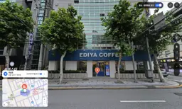


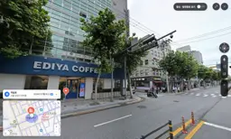
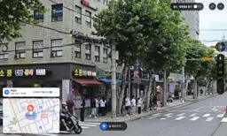
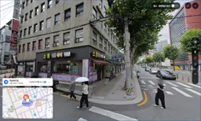
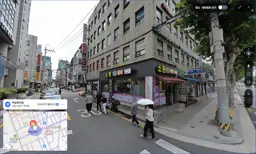
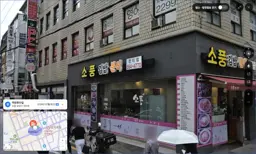
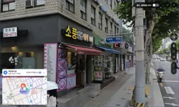
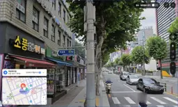
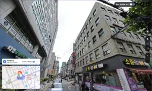


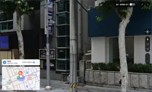
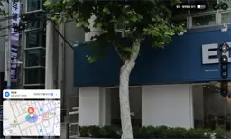
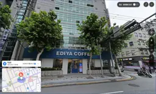
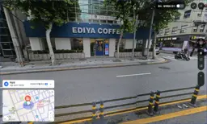
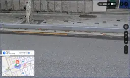
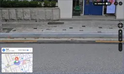
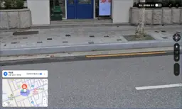
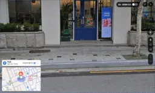

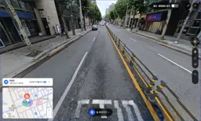


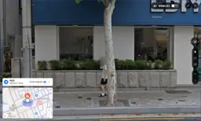

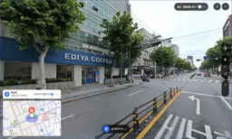
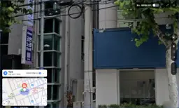

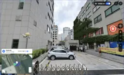


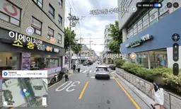
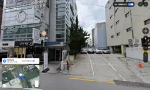

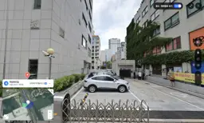
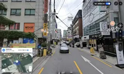
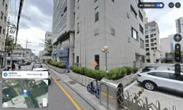


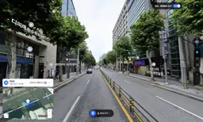
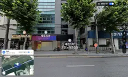


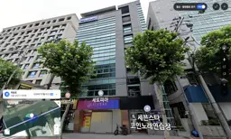
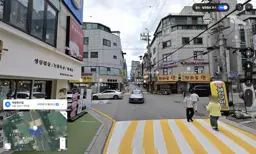
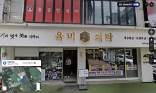


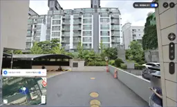

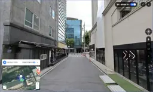
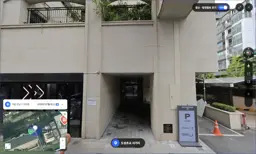


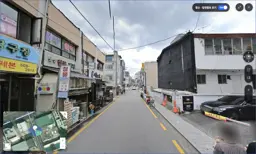
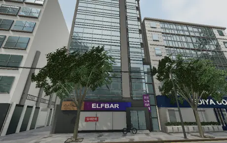


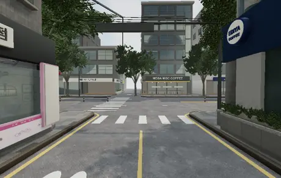

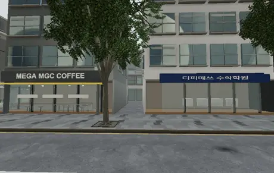


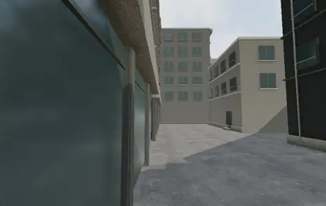

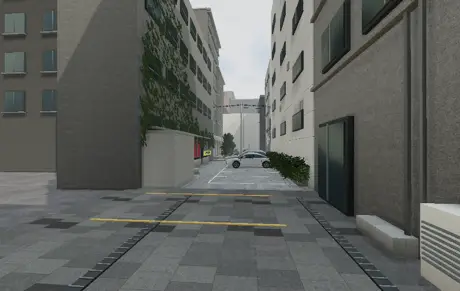


2026년 11월 23일. 처음 남은 시안부터 마지막 웹 검수까지, 대화에서 바뀐 요구와 그때의 화면을 함께 엮었습니다.
첫 질문은 Blender로 만든 풍경을 브라우저에서 얼마나 현실적으로 보여줄 수 있느냐는 것이었습니다. 첫 시안을 저장하고 같은 위치에서 다시 찍었습니다. 이어 캐릭터 뒤에서 보는 3인칭 화면으로 바꿨습니다.
“니맘대로 재구성하지말고”라는 피드백에 따라 정면, 양옆 점포, 화단, 간판과 모서리를 나누어 촬영했습니다. 사진에서 읽은 창과 벽의 비율을 Blender에서 고치고 웹에서 점포를 가까이 보았습니다.
소풍으로 들어가는 쪽이 차도라는 지적으로 모퉁이 보도를 잘라내고 연석과 노면 표시를 다시 배치했습니다. 별도로 후면 촬영 지점을 찾아 포장과 주차면, 주차 차량을 확인했습니다.
처음 접속하면 항공뷰에서 기다리고 버튼으로 보행을 시작하게 했습니다. 카메라 높이와 시작 위치를 조정하고, 로딩 중에도 장면이 보이게 했습니다.
레서판다 시안을 거쳐 셔츠와 니트를 입은 남녀 캐릭터로 바꿨습니다. 점프 자세와 달릴 때의 몸 흔들림을 조정하고 목적지까지 이동하는 장면을 영상으로 남겼습니다.
조이스틱 오른쪽에 점프를 두고 화면 스와이프와 바닥 탭 이동을 검수했습니다. 경계막은 파동에서 오각형 무늬로 바뀌었고, 떨어져 보이던 무늬의 변을 연결했습니다.
사용자가 보낸 화면에는 위층 아래로 빈 공간이 보이고 점포의 얇은 옆판이 드러나 있었습니다. 먼저 외피를 닫고 카메라가 벽을 통과하는 문제를 수정했습니다. 뒤이어 실물의 후면을 다시 조사했습니다.

네이버 거리뷰 촬영 위치 7곳을 이동해 30개 구도를 더 모았습니다. 서쪽 유리창 열, 주차장 차단기와 배수로, 소풍의 검은 창문 시트와 분홍 띠를 반영했습니다. 차량 비례를 기준으로 모델의 골목 폭을 3.83m에서 6.48m로 넓혔습니다. 이 폭은 실측값이 아닙니다.
1차 17컷, 중간 29컷, 최종 33컷. 장소를 누르면 남아 있는 차수별 캡처가 열립니다. 카메라가 벽에 들어갔던 일부 검수 컷도 보존했습니다. 최종본에서 카메라 위치를 바꾼 곳은 구도가 달라집니다.